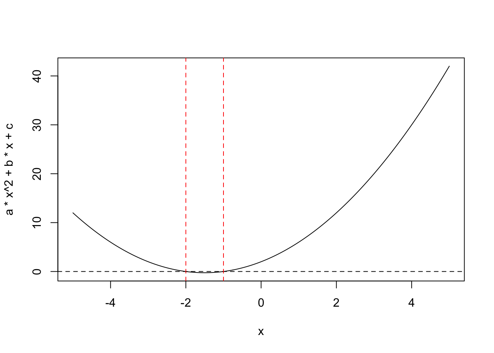

hw0
Exercises
- Write a Quarto document that defines variables \(a=1, b=3, c=2\) and print out the solutions to \(f(x) = ax^2+bx+c=0\). Do not report complex solutions, only real numbers.
The quadratic formula can be applied to solve this equation: \[\frac{-b \pm \sqrt{b^{2}-4ac}}{2a}\] Specifically, the variables a, b, and c are entered into the above formula to find the solutions.
A quadratic equation can have 0, 1, or 2 solutions based on its discriminant: \(b^{2}-4ac\). A quadratic equation has no real solutions when the discriminant is negative, one solution when the discriminant equals zero, and two solutions when the discriminant is positive.
My code checks the discriminant using an if-else statement where the conditionals are the possibilities for the discriminant listed above (negative, zero, or positive) and the instructions are to evaluate the quadratic formula (if the discriminant \(\geq\) zero), print out the number and value(s) of the solution(s), and plot and explain the outcome.
For the quadratic equation \(1x^{2} + 3x + 2 = 0\), there are two solutions. The solutions are x=-1 and x=-2.
- Include a graph of \(f(x)\) versus \(x\) for \(x \in (-5,5)\).
Here is a graph of \(f(x)\) versus \(x\) for \(x \in (-5,5)\). As indicated by the red dashed lines, there are two points where the quadratic curve intersects with the line y=0: one at x=-1 and the other at x=-2.